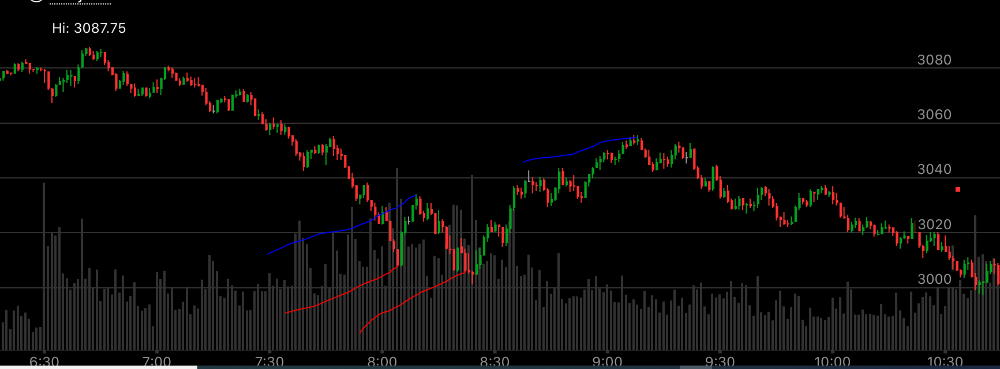
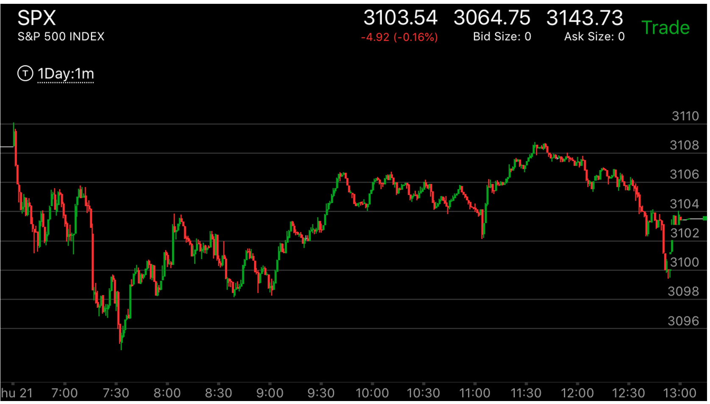
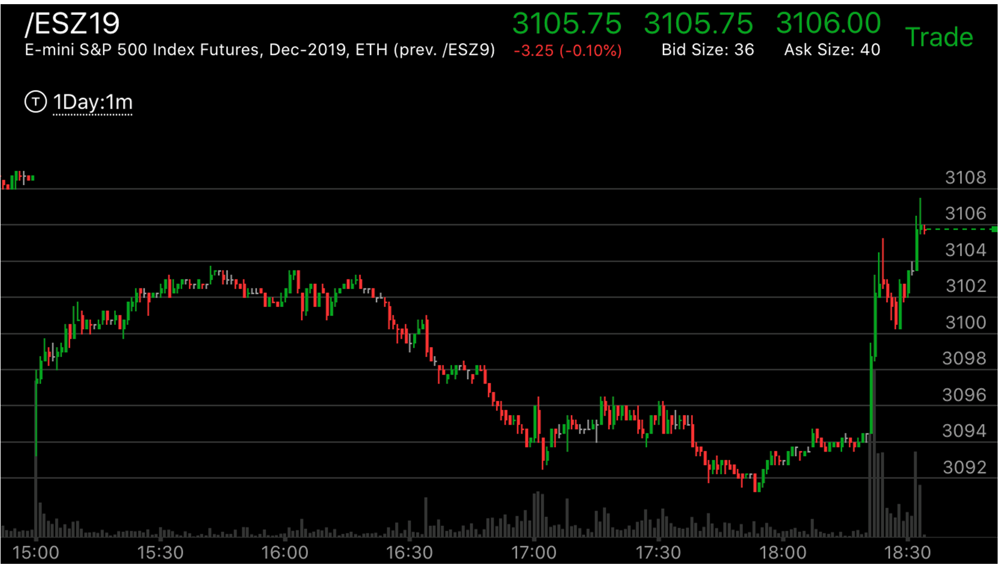
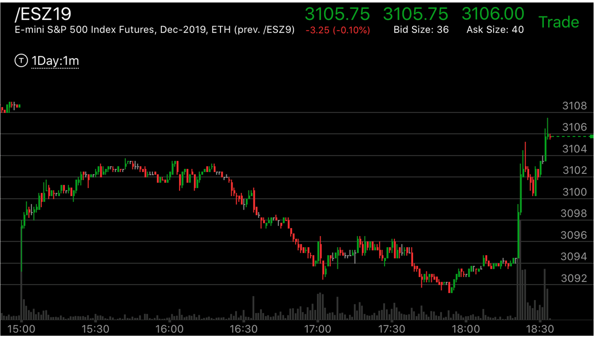

反弹幅度相对大小造成走势不同
- 这个走势是在没有相对速度的情况下起作用，如果有相对速度，比如上涨速度远远高于下跌速度，
或者相反，那么相对速度才有用
- 反弹的幅度一定要回到原位，这样才可以比较幅度
- 这个走势的判断，一定会拉回全部的幅度，这样才能判断为弱势。而且速度要相对快。
- 如果没有回到原位，那么会是相反的结果。也是一个相对强弱的走势。
- 以上涨为例子，如果从高点快速下跌，然后再次反弹，不到前面的高点，走平，然后走低，这个会继续大涨，超过高点。符合反直觉，缓慢上涨，却没有超过高点，反而走低。看起来很弱，但是很强。
- 一定是底部或者顶部，判断是否反转才可以应用。如果一般的情况，这个不适用。

图示：大盘不断下跌，直到第一个红线，它发生大幅反弹，超过前面的反弹点，再次下跌，创新低后，走平。这样就是相对弱势，然后它快速上涨，
涨的速度其实低于第一个红线的速度。说明它会更高。但是它本身涨的速度很快。在出现第二个蓝线。高于第一个蓝线后，它又出现了相对幅度走势。这样就会继续下跌，跌破第二个红线。

图示：
1. 开盘后快速下跌，拉回后，大跌。形成两段走势。
2. 上涨后，速度很快，然后创新高。这个反弹幅度比较大，时间上稍微长一些，但是也没有很长。这时应该认识到它会下跌，另外它也破坏了它的跨越点。8：00的顶部也比7：35的顶部平坦。
说明是真的顶部。8：00开始的下跌，一定会低于7：40的下跌低点，也一定会创新低。因为没有什么阻力点。


图示：图一处于图二的WED的白天。可以看到它是一个上涨当中的回调，结果也出现了相对
幅度弱势。图一从9：00到10：30，在底部震动了很久。超过在顶部的时间，这样也符合震荡要涨的特点。这时应该做多，
并且买第二天的期权。它尾盘上涨，收盘后，上涨，拉回，第二天开盘大涨。越过前面的高点。

图示：相对幅度在盘中出现的情况。它开盘后，大跌。第一个反弹小，第二个反弹很大。这样会继续下跌。7：30到底反弹后，它开始涨的很快，
到了8：30拉回后，走平。这时，它走出了一个相对弱势，8：40的反弹很大，8：50的反弹比较小。这样，这个就是底部了。会继续大涨。

图示：9：40它冲高后，立刻拉回，再次缓慢冲高，不到高点，走平，
冲高后，10:55,它创新高，然后走平，这样相对9：40的高点，它形成了加速走势，大盘开始反转。很快出现了第一浪。
然而，这个第一浪虽然很大，按理说应该出现一个更大的第二浪，它的反弹一开始很大，回到原位后，
再次反弹，幅度不到原位，再次下来，成了相对弱势反弹。这个就是底部了。它一定会超过3097这个下跌点的。
它收盘后果然超过了。
 

图示：
图一：大盘在现货市场大跌后，出现了两段走势，然后底部走平.这样这个大跌就结束了。它一定会上涨。它一开始就涨的很快，不断的上涨，收盘前到达了走势的上沿。
图二：它刚刚收盘后，一直在高位徘徊，3：00期货开盘后，它是大幅低开，这个低开持续很短，然后冲高，不到前面高点，再次下来。这次。它在17：00加速下跌，
然后反弹，出现了一个两段走势，要看到，这个点离最低点还有距离。它果然在高位走平后，再次创新低，这次完全到了前面的低点。虽然下午3：00开盘后，
幅度不是从最低开始的。但是可以想象，它从最低点开始。这样就成了一个相对幅度走势，关键是，它最后跌倒了前面开始的点3091.这个情况很特殊，它通过
期货市场的大幅低开来形成相对幅度弱势。达到底部。

图示：2:00出现反弹更高点。说明还会继续下跌。它这次下跌速度更快，出现了两段走势，
虽然第二浪似乎比第一浪小，但是它反弹很慢，开始大涨。

图示：
1. 观察8：45和9：10的反弹幅度，两者都是从同样起点开始的，结果9：10的反弹幅度更大。
说明太强了。根据反直觉原理，它会下跌。9：40和10：00还有10：20的反弹也是一样，都是
从一个相同的地方反弹的，10：20的反弹幅度更大。说明要下跌。
2. 10：40创新低后，后面的反弹一个比一个弱。但是11：00，11：30，11：50的反弹的起点，
都比10：40高。它们不是从同一个点反弹的。这样不能应用前面的原则，而是应该考虑它的起点，
表示它会继续下跌。

图示：18：00开始是一个典型的两段走势，应该会反转了，但是，它在底部出现了相对幅度强势，19：00和20：00出现了双底后，21：00的反弹幅度超过了
前面19：30的反弹。这样，它一定会创新低。不会反转。

图示：7：10大涨后，7：12大幅拉回，然后7：18拉回的幅度就比较小，而且注意7：18的拉回速度很快，而且全部拉回，碰到7：10第一次下跌的最高点。
然后一直在高位徘徊，从做空的角度看，这个是相对弱势。第二段跌的幅度很小。让做空的人心存怀疑。说明未来一定会低于7：10的低点。
它在7：35下跌，不到7：10的低点拉回。反弹，然后才大跌。7：50的上涨也有一样的规律。他的7：55的反弹幅度比较大，而8：05的反弹幅度就比较小，而它全部拉回，它拉回速度很快，而且拉回到了前面的8；10的最低点。显得弱势。

图示：8：00反弹比较大，8：30回到原位后，反弹比较小，显得很弱。这样就表示未来会涨。

图示：7：45到达最低点后，快速反弹，反弹到了3078.9：30再次回到原位。再次反弹。这次反弹幅度更大。超过了前面，然后在高位走平。而前一个走势在高位停留时间很短。这样这个走势反弹更加
强大。根据反直觉的原理，它会大跌。果然它收盘后，创新低。

图示：从底部反弹了三次，7：30反弹最高，然后下来。这样，它未来会继续下跌。